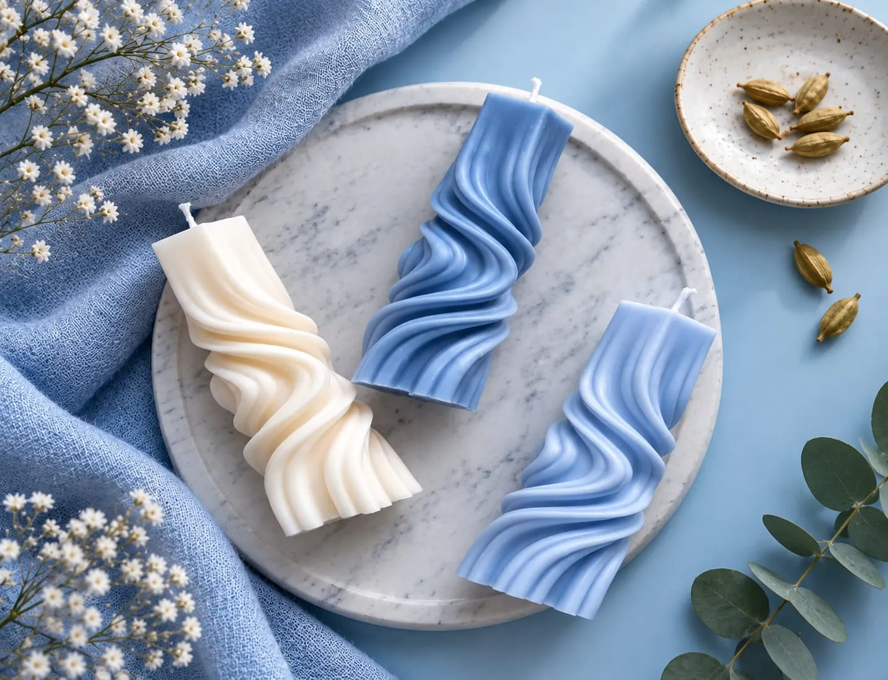

A warm collection of handmade jewellery, clay treasures, candles, fabric finds and home accents made to make everyday moments special.
Products in collection
Handmade categories
Made with care

Each piece gets the time, attention and character of a handmade original.
From oxidised jewellery to clay decor, there is a little joy for every corner.
Pieces that look lovely, feel personal and belong in real everyday life.
Choose your pieces online, then place your order directly through WhatsApp.
"The earrings feel light, bright and completely one-of-a-kind. I get compliments every time."
"My candle arrived beautifully packed and the scent makes my evenings feel softer."
"The clay diyas brought such a lovely warmth to our puja corner. Beautiful work."